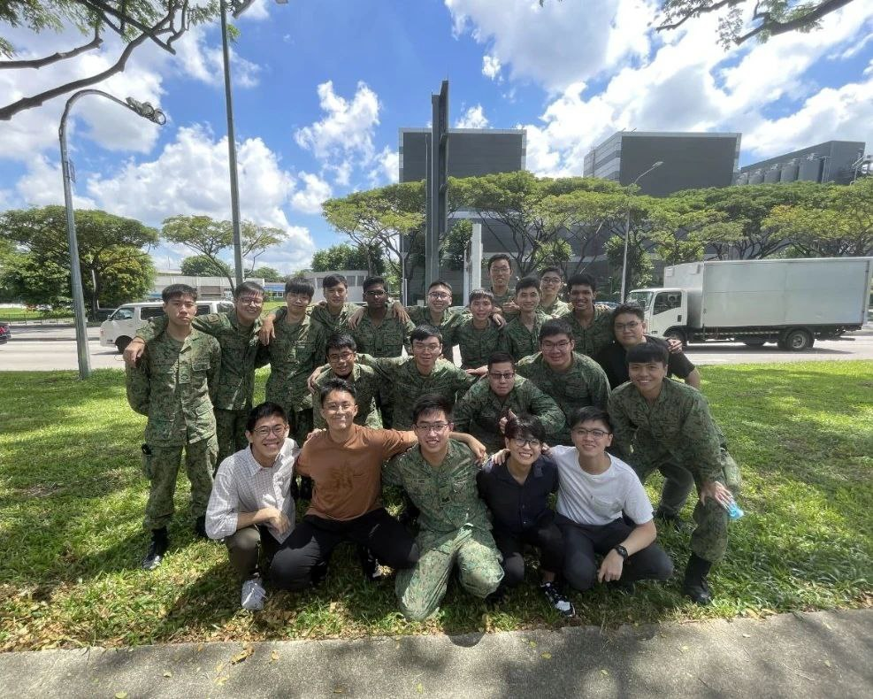
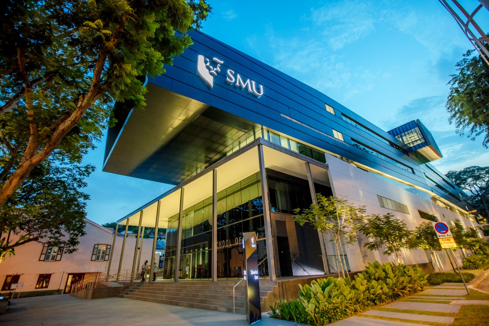
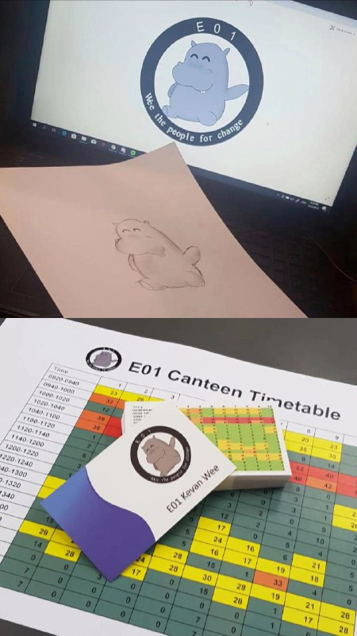

About Me
A little bit about who I am and what I do.
Introduction
Hello! I am Kevan Wee and welcome to my personal portfolio! I am a people-oriented person who loves working on the ground and, most importantly, caring for those around me. Engaging in dialogues and conversations with others is something I find eye-opening because I believe it is crucial to empathise with others and work with them to make a difference.
I was previously a Senior Mapper in Singapore's professional mapping organisation, SAF Mapping Unit, serving a stint as a regular in the newly formed Digital & Intelligence Service. Having worked with MINDEF/SAF and other Whole of Government (WoG) agencies, I supported multiple large-scale exercises and operations, honing skills in project and client management, Geographic Information Systems, and Cartography.
Through regular interactions with our personnel, I helped to identify areas in our processes for improvement, also spearheading the standardization of Imagery Support Group's Manpower Status Reporting, reducing administrative workload and enhancing operational efficiency.


What I'm Currently Doing
I am currently pursuing a Bachelor of Science (Computing & Law) at Singapore Management University, aspiring to delve deeper into Legal Tech. I am actively searching for any opportunity that can further my understanding of both the technological and legal realms.
Notwithstanding my professional interests, my hobbies include drawing and bowling! While juggling my academic commitments, both activities have continued to be a big part of my life — a way for me to express myself creatively.
Some Fun Facts!
Some of my fellow Dunmanians who studied at Dunman High School between 2019–2020 endearingly refer to me as the “Hippo guy” or “Hippo Wee”!
To add a little context, the hippo was my campaign mascot whilst I was running for the office of the Executive President of DHS. Hippos are loving, warm creatures who are concerned with the emotional well-being of everyone they know — that was precisely the kind of person and leader I wanted to be (even though otters are my favorite animal).
Funny enough, the mascot stuck with me through my term of service and essentially became a part of my identity. My time as the last Executive President truly brings back many fond memories. Notably, it was the first step out of my comfort zone that later enabled me to lead with more confidence. Working on large-scale projects like the restructuring of DHS's Student Council and mentoring DHS's flagship Leadership Symposium are some of the opportunities I will forever be grateful for.
